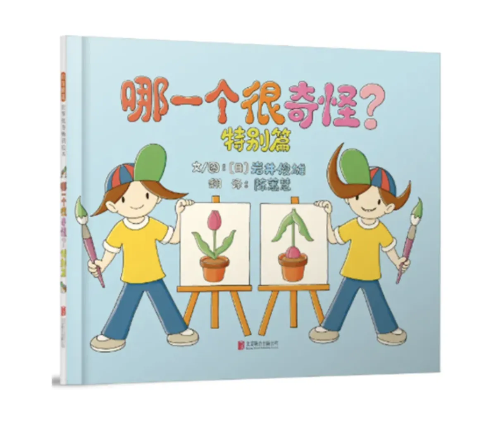
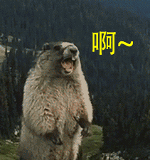
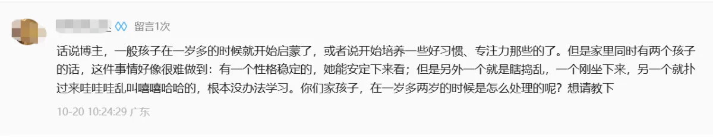
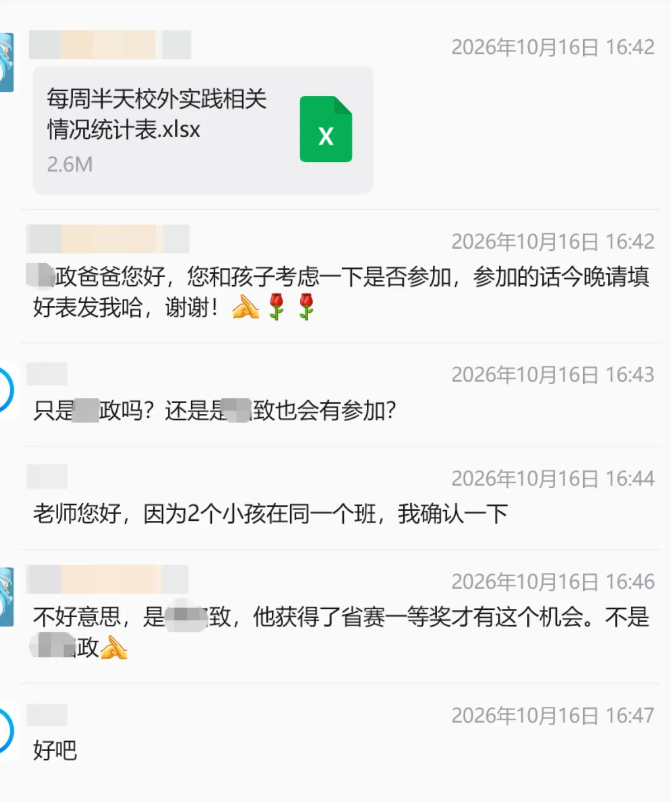
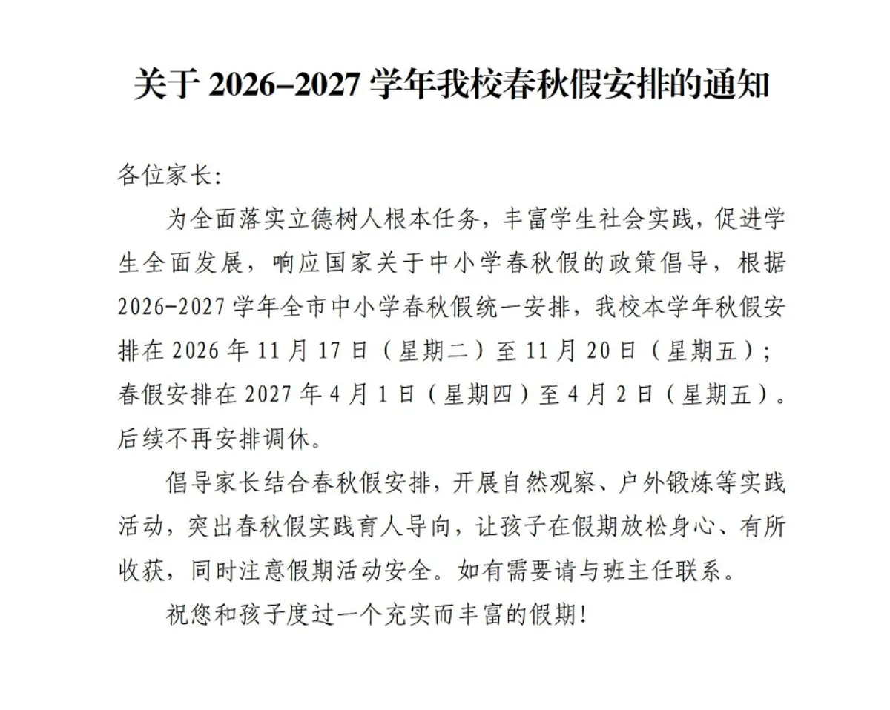

按主题找内容
睡眠、喂养、教育，按话题直奔主题
干货：双胞胎的学习区布置攻略，少踩一个坑是一个
1. 书桌能分开，就尽量分开 这条放第一位。 同卵双胞胎真的只是样子长得像而已，其他的，不能说没关系，只能说，毫不相干，…
2026-11-03

终于找到啦！双胞胎家庭必读绘本08《哪一个很奇怪》 双胞胎家庭里最常听到的一句话是什么？你们俩怎么不一样？外人说这话的时候，潜台词是，你俩应该一样啊。但你家那两个，一个爱吃… 2026-10-29
双胞胎之间的一切比较，都是毒药 昨天辅导作业，我犯了一个致命的错误。 圆圆写作业，向来慢， 昨晚上做知训作业，也就两页，总共才6道题， 他在座位上磨蹭了… 2026-10-27
双胞胎的专注力就是差！这锅要背吗？ 这篇来回答一个宝子的问题。 圆圈兄弟一岁多、两岁的时候，我没有专门培养过他们的专注力。 那时候，我陪他们俩做得最多的事情… 2026-10-23
双胞胎之间，总有一个千年老二 ... 双胞胎妈妈最怕什么？ 一个孩子拿了奖，另一个没拿。 一个孩子被选上了，另一个落选了。 偏偏这种事，还没法避免。 上周五，… 2026-10-20
秋假，是双胞胎妈妈的皇恩浩荡，还是糖衣炮弹？ 这学期的秋假，来得猝不及防，甚至有点诡异。 11月17日到20日，加上周六日，足足6天。 据说已经有大聪明这样操作了：1… 2026-10-15